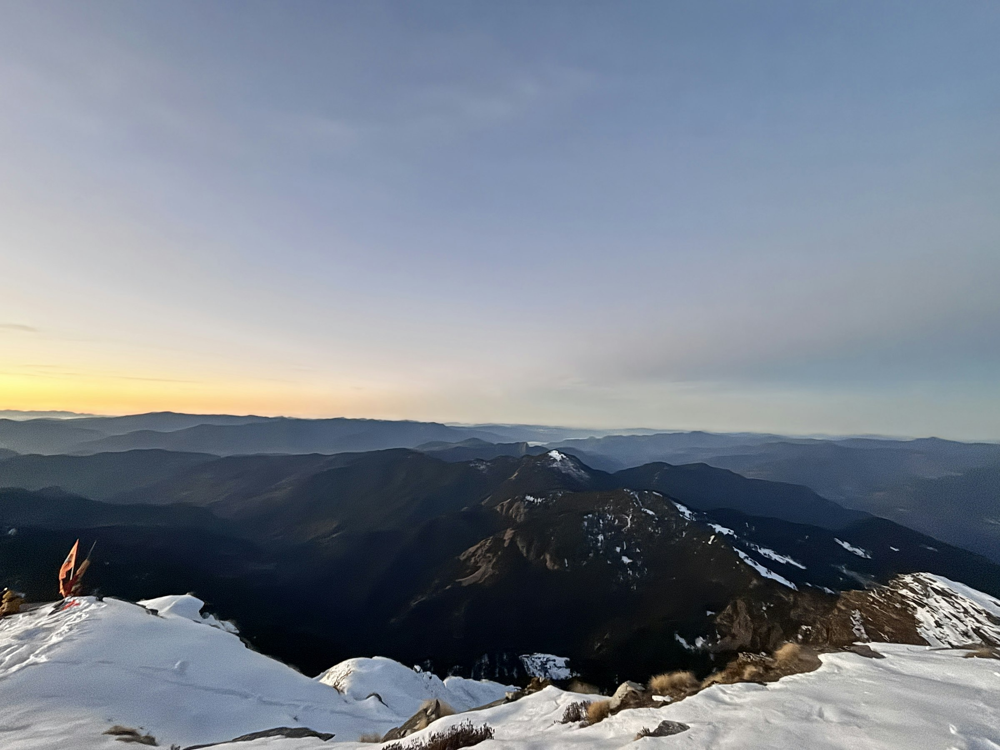
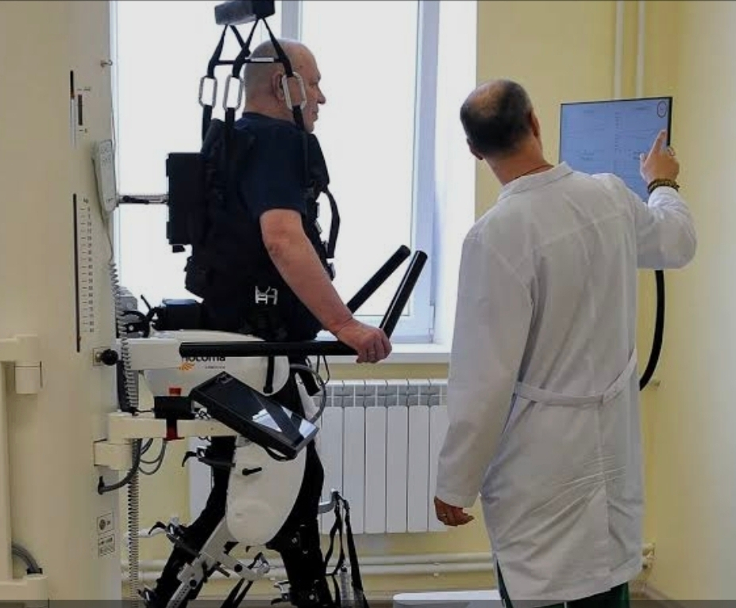
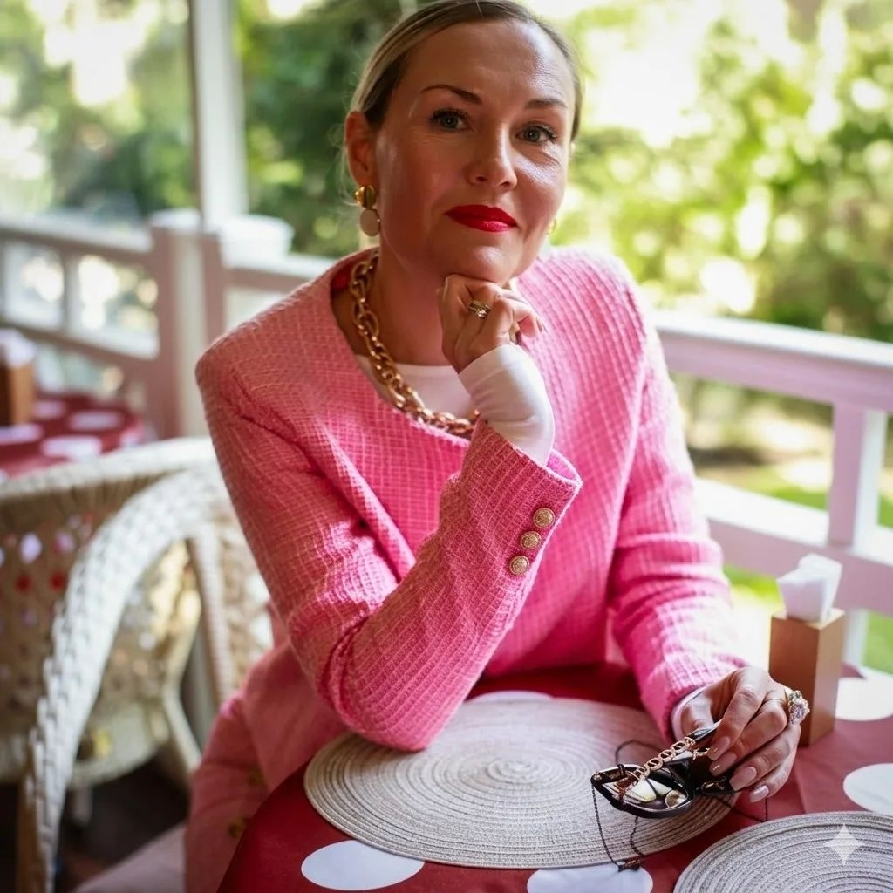

Благотворительный фонд
ВЫСОТА
Помощь ветеранам боевых действий и их семьям
Не словами, а реальными делами хотим отблагодарить военнослужащих, которые встали на защиту интересов нашей Родины.
О фонде
Благотворительный фонд помощи
ветеранам боевых действий «Высота»
Помогаем ветеранам боевых действий и их семьям. Не словами, а реальными делами хотим отблагодарить военнослужащих, которые встали на защиту интересов нашей Родины.
Фонд создан в городе Сочи и работает как некоммерческая организация: мы сопровождаем бойцов, вернувшихся с СВО, на всём пути — от восстановления здоровья до возвращения к мирной, полноценной жизни. Название «Высота» отражает нашу главную цель — помочь каждому вновь встать на ноги и подняться над трудностями.
Чем мы занимаемся
Направления помощи
Медицинская реабилитация
Бесплатная реабилитация для военнослужащих в Краснодарском крае: медицинское восстановление на современном оборудовании, снижение риска инвалидности и возвращение подвижности.
Психологическая помощь
Бесплатные консультации кризисного психолога для бойцов, вернувшихся с СВО, и для тех, кто потерял близких. Работа с травмой методом гештальт-терапии и EMDR.
Социальная адаптация
Сопровождение ветеранов и их семей, встречи и мероприятия, которые объединяют, поддерживают и помогают вернуться к мирной жизни — рядом с теми, кто прошёл тот же путь.
Люди фонда
Как мы помогаем

Реабилитация военнослужащих
Имеется возможность пройти реабилитацию военнослужащим в Краснодарском крае совершенно бесплатно. Реабилитация включает медицинское восстановление, психологическую помощь и социальную адаптацию.
Главная цель — вернуть здоровье, снизить риск инвалидности и помочь вернуться к мирной жизни. Пожалуйста, распространите эту информацию среди тех, кому она может быть полезна — забота о здоровье это важно.
Запись по телефону: +7 993 320 53 31 или +7 996 406 44 97

Невская-Карапиди Хельга
Кризисный психолог, гештальт-терапевт, EMDR-специалист
Наш психолог готова оказать бесплатную помощь людям, потерявшим близких, и бойцам, вернувшимся с СВО.
Запись на встречу по телефону: +7 996 406 44 97
Наши мероприятия
«Искусство объединяет и исцеляет души»
Фонд регулярно проводит благотворительные встречи и мероприятия для ветеранов и их семей: концерты, творческие и памятные вечера, где звучат честные слова о мужестве, братстве, чести, любви и надежде. Такие встречи объединяют, поддерживают и помогают вернуться к мирной жизни.
Следите за анонсами новых мероприятий фонда и регистрируйтесь по телефонам: +7 988 500 53 31, +7 996 406 44 97.
Поддержать фонд
Ваш взнос помогает бойцам вернуться к жизни
Вы можете поддержать ветеранов боевых действий и их семьи благотворительным взносом. Онлайн-оплата подключается — способы ниже появятся в рабочем виде в ближайшее время.
Банковской картой
Онлайн-оплата картой на сайте появится здесь после подключения платёжного сервиса.
ПоддержатьПо банковским реквизитам
Реквизиты фонда для перевода (для физических и юридических лиц) будут опубликованы здесь.
Скачать реквизитыПо QR-коду
QR-код для оплаты через СБП появится здесь.
Чтобы внести пожертвование уже сейчас, свяжитесь с руководителем фонда:
Вячеслав, +7 988 500 53 31Все пожертвования используются исключительно на уставную деятельность фонда: реабилитацию, психологическую помощь и социальную адаптацию ветеранов боевых действий.
Связаться с нами